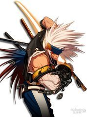
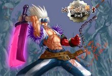
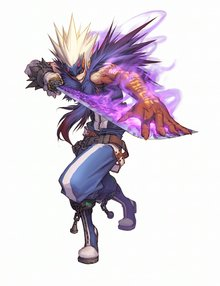
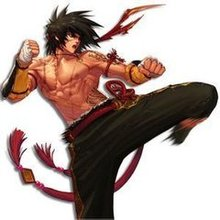
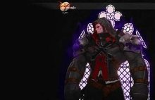
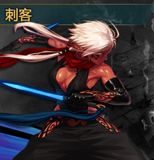

鬼剑士也称“鬼手”，左手常戴着抑制鬼神的封印铁链。鬼剑士拥有神秘的鬼神力量和较强的暗属性抗性，善用刀剑和钝器同时攻击多个敌人，是近战型职业；推荐穿戴重甲。
剑魂为精通所有剑类武器的武器专家，战场上的多面手。也是男鬼剑士中唯一能掌握光剑精通的角色。擅长以迅雷不及掩耳之势的连击击溃对手。能够在战斗中进退自如，并且精通二刀流(在一次攻击中造成双重伤害)，灵活性极高。极快的攻击速度是其在鬼剑士职业中最大的特点。
被卡赞瘟疫感染的鬼剑士。掌握暴走模式和血气攻击技能。独特的死亡抗拒可以使他们远离死亡威胁。
鬼泣，剑士中的唤魔者，是唯一能解除左手封印并掌握鬼之力的角色。擅长召唤鬼神助阵，精通各类阵法，步伐。如:冰霜之萨亚，刀魂之卡赞，虚无状态的鬼影步，以及致命的冥炎之卡洛等。
男格斗家，注重拳、脚、肩、膝等身体部位的锻炼，并能够熟练地运用它们攻击敌人！男格斗家拥有良好的体力，擅长近攻和灵活的防守。他们掌握着膝击、瞬步、旋风腿等腿部技能，并且可以用下段踢阻断敌人的移动。推荐穿戴轻甲。
修炼念气之力的格斗家。善用念气感知周围物体，能回避失明等异常状态。可以召唤念兽。

崇尚实用和最有效的战斗方式的实战专家。可以使用各种隐藏道具。擅长投掷各种道具攻击敌人，毒抗性高。
挖掘身体各部位的机能，追求肉体力量巅峰的正统格斗达人。散打使用拳套，并且擅长腿部攻击。可以发动霸体状态，抵御敌人的攻击
生活在天界的神枪手，是善于利用枪械击毙远距离敌人的战士！他们拥有高大的体格和健壮的臂膀，但视力和体力却不如人类。神枪手熟悉各类枪械和重火武器的使用方法，可以把火焰、寒冰等属性附加到枪弹上，且任何时候都能迅速举起枪械攻击敌人；推荐穿戴皮甲。
在天界残酷的无法地带生存下来的神枪手。掌握了任何姿势、任何时刻都能射击敌人的独特射击技能可以利用腿部向敌人发出近身格斗左轮枪射击速度最快的职业。
精通重火武器的神枪手。善用激光炮、狙击枪等强威力的重火武器攻击敌人，是极具威胁性的职业。
善于强化弹药威力的神枪手。掌握冰冻弹、爆炎弹等独特的弹药技能。特殊的交叉射击技能可以攻击大范围的敌人。
圣职者，为除恶扬善和普度众生而接受残酷训练的虔诚信徒。圣职者受过神谕和启示，善用快速的拳头和巨兵镇压邪恶，拥有治愈伤口和驱散异常状态的技能；推荐穿戴重甲。
用诸神给予的守护能力保护队友生命的圣职者。精通治愈、保护、替队友承受伤害的技能。危急时，可以瞬间引爆神圣之力对敌人造成伤害。

因对邪恶的极度仇恨和愤怒，甘愿让自身变成恶魔的圣职者。可以变身为恶魔，增加攻击力和移动速度，但会减少防御力且不能恢复魔法值。能吸进敌人的血气或把自己的血转变成魔法值。拥有多种弱化敌人的技能。
暗夜使者是敏捷型暗精灵战士，为了暗精灵的未来，她们来到了阿拉德大陆。暗夜使者擅长使用匕首和双剑等短兵器进行迅捷的致命攻击，且还能利用手杖施放咒术和召唤死灵；推荐穿戴皮甲。
最擅长使用匕首和双剑的暗夜使者，其最大特点是可以进行快速攻击和华丽的空中连击。可以向Y轴移动以回避敌人的攻击，并且还可以使用2段跳。其多数的技能可以强制中断普通攻击，且拥有独特的连击系统。
主流的魔法师一般聚集在魔界布鲁克林地区，他们一起研究魔法，并乐于分享成果，有的甚至还组建了各种魔法公会团体。在偏远地区博隆克斯也存在着这样一个新的魔法流派，他们为了在恶劣的条件下生存，为了打倒眼前的目标，可以不惜一切代价。
将冰系魔法研究到极致， 并且可以利用寒冰制造出致命武器的近战型魔法师。推荐属性：智力/推荐防具：皮甲
人类 阿甘左、臭水沟公主帕丽丝、毒王路易斯、土罐、奥菲利亚、卡妮娜、辛达、罗莉安、林纳斯、阿尔伯特、生产商罗杰、达芙妮、布万加、古古莱恩、敏泰、雪崩拉比纳、雷诺、巴尔雷娜、奥尔卡、素喃·阿斯卡、西岚、诺羽、小铁柱
天族游侠凯丽、突击队长兰蒂卢斯、机械七战神
暗精灵卢克西、克伦特、卡坤、莎兰、梅娅、夏普伦、怨恨之摩根
魔族艾丽丝、炫纹师尼巫、菲利、凯蒂
使徒卡恩、赫尔德、普雷、卡西利亚斯、希洛克、狄瑞吉、安徒恩、罗特斯、卢克、巴卡尔
其他卡赞、奥兹玛、赛丽亚、索西雅、夏洛克、冰心少年、光之城主赛格哈特、暗黑三骑士、爆龙王巴卡尔、乔恩、冰霜之萨亚、审判者马塞尔、远古之虫戮蛊
贝尔玛尔公国距今已有500年的历史，其领土从大陆西南部的法罗湾开始，北面与虚祖接壤。公国的首都位于赫顿玛尔。女王是斯卡迪，但实际上公国的政权是掌握在3位议员手中。 贝尔玛尔在精灵语中意为：善良人的国度。这里土地肥沃，人们安居乐业，生活自在，整体看来确实是一个富饶的国家。另外，贝尔玛尔在绘画、音乐、诗歌、文学、出版等方面，也都有比较均衡的发展。 军事方面，虽然北面有班图族入侵，但公国凭借地理优势，倚仗虚祖国与帝国帮忙抵挡，所以一直以来，并不重视培植强大的军事力量；而且自从300年前，佩鲁斯帝国灭亡之后，来自海上的威胁也消除了，因此公国内部更加忽视国防安全。 也因为这样，在后来的侵略战争中，公国惨败，现被德洛斯帝国所占领。
强大的佩鲁斯帝国在血之诅咒的蔓延下，轰然倒塌。随着时光的流转，野心勃勃的帝国后裔们不甘寂寞，又以复兴帝国为名建立了一个新的王朝，即德洛斯帝国。 德洛斯帝国以法罗湾为界，划分为南北两边。首都则位于南部的黄金都市帷塔伦。 虽然这是一个由皇帝统治的中央集权制国家，但由于南北地域的分隔，两地的氛围截然不同。相比南部严格的军事化管理，北部的民风更为活泼开放。 尽管如此，但他们之间的凝聚力非常强，一旦遭遇危险，两地的人民便会团结一致，共同对外。这很大程度上是源于帝国的国民自身拥有的自豪感与使命感。
游戏的画面采用全2D的表现方式，复古式的动漫风格画面将日韩流行的画风元素起到了完美的结合。细观察还可以看出画面中那些来自制作者别有用心的光影效果。在3D网游当道的年代，2D的游戏画面从本质上是不能拿来和3D游戏画面相比的，所以在关注其画面区别的同时，还不如多关注该游戏所要展现的内涵和乐趣。